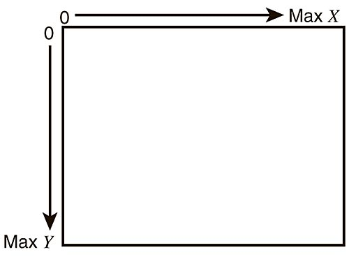

Information General sur Python
Les types de variables en Python
Les int (integers | entiers)
Les int sont des entiers (nombre). Ils peuvent être positifs ou négatifs.
a = 5
b = -3
c = 10 + 17
Les float (floating point | flottants)
Les float sont des nombres à virgule (nombre décimal). Ils peuvent être positifs ou négatifs.
a = 5.0
b = -3.5
c = 10.5 + 17.0
Les str (strings | chaînes de caractères)
Les str sont des chaînes de caractères (texte). Ils sont délimités par des guillemets simples ou doubles.
a = "Bonjour"
b = 'Bonjour'
c = "Bonjour" + ' ' + 'tout le monde'
Les bool (booleans | booléens)
Les bool sont des booléens (vrai ou faux). Ils sont utilisés pour les conditions.
a = True
b = False
c = 5 > 3 (vaut True)
Les types specifique au robot
Les couleurs
!! note En informatique, nous utilisons les couleurs de base dites RGB en anglais (Rouge (Red), Vert (Green), Bleu (Blue)). Pour représenter une couleur, il faut combiner les différentes intensités de ces trois couleurs de base.

Info
La valeur numérique d'une composante de base (R, G et B) est une valeur numérique entre 0 et 255. 0 signifie aucune intensité de couleur, et 255 signifie une intensité maximale. Pour obtenir une couleur spécifique il faut combiner les trois valeurs de rouge, vert et bleu. Par exemple, le blanc pur est obtenu en ayant les trois composantes à 255 (255, 255, 255), tandis que le noir pur est obtenu en ayant toutes les composantes à 0 (0, 0, 0).
Success
Dans Pybot, nous associons les trois valeurs RGB dans une variable selon l'exemple ci-dessous: variable = (R, G, B)
couleur_violette = (128, 0, 128)
couleur_noir = (0, 0, 0)
couleur_blanc = (128, 0, 128)
couleur_orange = (255, 127, 0)
Note
Vous pouvez utiliser un sélecteur de couleur pour trouver une couleur spécifique. Par exemple via ce site.
On peut aussi utiliser la Class Couleur pour avoir des couleurs prédéfinies.
from pybot import Couleur
couleur_violette = Couleur.VIOLET
couleur_noir = Couleur.NOIR
couleur_blanc = Couleur.BLANC
couleur_orange = Couleur.ORANGE
Info
Voila une liste de couleur prédéfinie dans la class Couleur:
ROUGE, VERT, BLEU, JAUNE, CYAN, MAGENTA, BLANC, GRIS, NOIR, ORANGE, ROSE, VIOLET, BLEU_CIEL, VERT_SAPIN
User
C'est une structure de données qui contient les informations de l'utilisateur.
user = {
"nom": "Jean",
"prenom": "Dupont",
}
print(user["nom"]) # Affiche "Jean"
print(user["prenom"]) # Affiche "Dupont"
Les positions
Les positions x et y de la fenêtre
Les coordonnées dans une fenêtre informatique sont généralement définies à partir du coin supérieur gauche.
Le premier pixel qui se trouve en haut à gauche correspond aux coordonnées x = 0 et y = 0.
Alors que le dernier pixel en bas à droite correspond à la coordonnée x maximale et à la coordonnée y maximale.
Par exemple, si la fenêtre fait 300 pixels de long et 200 pixels de haut. Le dernier pixel a les coordonnées x = 299 et y = 199.

Les boucles
La boucle while
La boucle while est une boucle qui répète un bloc d'instructions tant qu'une condition est vraie.
Il faut indenté le bloc d'instructions (Tabulation) pour l'avoir dans la boucle.
i = 1
while i < 6 :
print(i)
i += 1
print("Fin de la boucle") # Ne sera pas dans la boucle
break
Avec la boucle while, on peut utiliser le mot-clé break pour arrêter la boucle même si la condition est vraie.
Info
Dans l'exemple ci-dessous, la boucle s'arrête lorsque i est égal à 3.
Les lignes en dessous du break et contenu dans la boucle ne seront pas exécutées.
i = 1
while i < 6 :
print(i)
if i == 3 :
break
i += 1
Les conditions
La condition if
La condition if est utilisée pour exécuter un bloc de code si une condition est vraie.
a = 33
b = 200
if b > a :
print("b est plus grand que a")
La condition else
La condition else est utilisée pour exécuter un bloc de code si la condition if est fausse.
a = 33
b = 200
if b > a :
print("b est plus grand que a")
else :
print("b est plus petit que a")
La condition elif
La condition elif est utilisée pour exécuter un bloc de code si la condition if est fausse, mais une autre condition est vraie.
a = 33
b = 33
if b > a :
print("b est plus grand que a")
elif a == b :
print("a et b sont égaux")
Les fonctions
Une fonction est une séquence d'instructions qui effectue une tâche. Elles définissent des actions à faire lors de leur appel. Une fonction est constituée de son nom, des paramètres pris en entrée et de son type de retour.
# Cette fonction affiche "bonjour"
def afficher_bonjour():
print("Bonjour")
# Cette fonction affiche le contenu de mot
def afficher_argument(mot="Salut"):
print(mot)
# Cette fonction affiche "Coucou" et renvoi le même mot
def afficher_et_renvoyer_coucou() -> str:
mot = "Coucou"
print(mot)
return mot
def main():
afficher_bonjour()
afficher_argument("Bonjour à tous, je suis un argument")
afficher_argument()
retour = afficher_et_renvoyer_coucou()
print("retour =", retour)